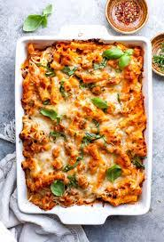

Baked Ziti

Description
A recipe so good that you will have to call your mother to tell her that her cooking sucks!
Ingredients
- Dry Ziti
- Pasta sauce
- Mozzerella
- Provolone
- Sour cream
- Parmesean
- Ground beef
- Onion
Steps
- Boil pasta and preheat oven
- Cook ground beef and dice onions
- Add onions to beef
- Add pasta sauce to beef and onions after beef has browned
- Simmer sauce for 10 minutes on low-med heat
- Layer the dish in order
- Half ziti
- Mozzerella
- Sour cream
- Half pasta sauce
- Half ziti
- Provolone
- Half pasta sauce
- Bake in oven at 350 farenheight for 30 mim
- Let cool and serve fresh